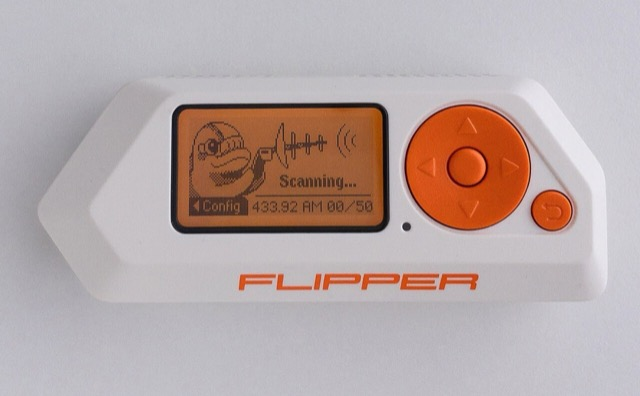
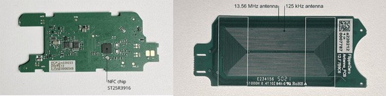

Flipper Zero
Тамагочі для гіків: що він справді вміє — і чому TikTok перебільшує
Flipper Zero — кишеньковий «мультитул» для роботи з радіосигналами, який за формою нагадує іграшку-тамагочі з дельфіном на екрані. Він читає й повторює інфрачервоні пульти, сигнали на частотах 433 і 868 МГц, безконтактні мітки й картки, прикидається USB-клавіатурою. Навколо нього виріс ореол «універсального зламувача» з роликів у TikTok — здебільшого перебільшений. Ця стаття — оглядова: як влаштовано кожен «орган чуття» пристрою, що з популярних страшилок правда, а що міф, і з чого почати власнику. Кожен блок позначено джерелом: технологіяправдаміфчастково.
01Що це за пристрійзалізо під корпусом
Усередині — мікроконтролер STMicroelectronics STM32WB55RG: ядро ARM Cortex-M4 на 64 МГц для прошивки й окреме M0+ на 32 МГц для Bluetooth. Пам'ять скромна: 1024 КБ flash і 256 КБ RAM, решта — на microSD. Екран монохромний, 1,4 дюйма, 128×64 пікселі, з бурштиновим підсвічуванням. Живлення — акумулятор 2100 мА·год, у режимі очікування пристрій живе близько місяця. Кожна «антена» відповідає за свою технологію — натисніть на модуль нижче.

Фото: Turbospok, Wikimedia Commons, CC BY-SA 4.0
Не плутати. «Антена на всі діапазони» — перебільшення. Радіомодуль CC1101 працює лише в піддіапазонах 300–928 МГц (пульти, брелоки, давачі), а Wi-Fi і стільникового зв'язку в базовому Flipper немає взагалі — для Wi-Fi потрібна окрема плата-модуль.
02Інфрачервоний пультнайбезпечніший трюк
Звичайний пульт телевізора блимає невидимим інфрачервоним діодом. Щоб блимання не плутали зі світлом лампи, його «несуть» на частоті 38 кГц, а кнопку кодують довжиною пауз. У протоколі NEC нуль — це коротка пауза (близько 1,12 мс), одиниця — удвічі довша (близько 2,25 мс). Flipper просто записує цей візерунок і повторює його своїм діодом. Натисніть кнопку на сцені — і подивіться, як код кнопки перетворюється на спалахи.
Це найкорисніша й найбезпечніша функція: універсальний пульт для власного телевізора, кондиціонера чи проєктора, коли «рідний» загубився. Інфрачервоний сигнал діє лише в прямій видимості й лише на кілька метрів.
Цікавий факт. У режимі «універсального пульта» Flipper не копіює ваш пульт, а перебирає базу найпоширеніших кодів вимкнення, доки телевізор не згасне — тому одним пристроєм можна вимкнути майже будь-який екран у кафе. Це дратує, але нічого не «зламує».
03Радіо 433 і 868 МГцфіксований код проти плаваючого
На цих частотах «розмовляють» брелоки шлагбаумів, бездротові дзвінки, давачі температури, старі автосигналізації. Ранні брелоки надсилали той самий код щоразу — його достатньо один раз записати й повторити. Саме проти цього й придумали плаваючий код (rolling code): брелок і приймач мають спільний лічильник, і кожне натискання — це новий одноразовий код. Записаний сигнал, програний удруге, приймач уже відхиляє як «старий». Перемкніть тип брелока на сцені й спробуйте «повторити» запис.
Висновок. Перехід на плаваючий код прибрав найпростіший «повтор» — і саме тому старі системи з фіксованим кодом поступово замінюють. Офіційна прошивка Flipper навмисно не вміє надсилати захоплені плаваючі коди — лише показувати їх у списку.
04RFID і NFCчому пропуск копіюється, а картка — ні
Безконтактні мітки бувають двох світів. Старі перепустки на 125 кГц (RFID) — це фактично «ім'я вголос»: піднесли — картка проказала своє число, і все. Таке число Flipper зчитує й записує як просте значення. Банківська картка й сучасний пропуск на 13,56 МГц (NFC) влаштовані інакше: там криптографія. Зчитувач ставить «запитання», картка рахує відповідь із секретним ключем, який ніколи не залишає картку, — і щоразу відповідь нова. Повторити її не можна. Перемкніть частоту й подивіться на обмін.

Антена NFC і чип ST25R3916 на платі. Фото: Turbospok, Wikimedia Commons, CC0
За NFC відповідає чип ST25R3916 на 13,56 МГц: він розуміє ISO-14443A/B, MIFARE, FeliCa, iClass. За 125 кГц — окрема котушка. Банківську картку Flipper бачить, але читає лише службові дані (тип, іноді маскований номер) — цього замало, щоб щось оплатити.
Важливо. Саме через криптографію «відповіді щоразу нової» платіжні картки й сучасні пропуски скопіювати простим піднесенням не вдається. Уразливі — лише старі статичні мітки, які передають незмінний номер.
05Прошивкиофіційна й спільнотні
Flipper відкритий, тому крім офіційної прошивки є кілька спільнотних «форків». Головна відмінність між ними — не стільки можливості (ядро в усіх спільне), скільки стабільність і кількість «наворотів». Натисніть на рядок, щоб побачити, чим прошивка вирізняється.
| Прошивка | Регіон. лок знято | Плаваючі коди | Плагіни · ігри | Стабільність |
|---|
Не плутати. «Знято регіональний лок» означає лише дозвіл передавати на частотах інших регіонів — у багатьох країнах це само собою незаконно, бо порушує правила радіоефіру. Перемикання між форками до того ж може стерти збережені файли, тож спершу роблять бекап microSD.
Версії на 25.10.2026: офіційна 1.5.1 (15 жовтня), Momentum mntm-012 (31.12.2025), Unleashed і RogueMaster оновлюються безперервно. Джерела — репозиторії й сайти проєктів.
06Міфи з TikTokщо правда, а що ні
Більшість вірусних роликів показують «миттєвий злам» усього підряд. Розберімо найпоширеніші твердження — натисніть на кожне, щоб побачити вердикт.
Висновок. Flipper — потужний навчальний інструмент, щоб побачити радіосвіт довкола. Але сучасний захист — плаваючі коди й криптографія — тримається саме проти «записав і повторив». Там, де в ролику «зламали за секунду», зазвичай або стара вразлива система, або штатний сигнал, або монтаж.
07Закон і з чого початиде легально та перші кроки
Сам по собі пристрій легальний у більшості країн; карається не володіння, а зловживання — доступ до чужих систем. Але є винятки. У Бразилії регулятор ANATEL ще 2023 року не пропустив Flipper через правила радіочастот, і партії вилучали на митниці. Amazon заблокував продаж 7 квітня 2023-го, назвавши пристрій «скімером». Канада в лютому 2024-го оголосила про намір заборонити його через викрадення авто, але вже 20 березня пом'якшила позицію до «обмежити зловживання», бо жодного доведеного викрадення саме цим пристроєм не знайшлося. У США володіння легальне.
Якщо Flipper уже у вас — ось безпечні перші кроки. Сцена нижче відтворює його інтерфейс: гортайте меню кнопками.
- Познайомтеся з дельфіном. Він — тамагочі: що більше ви користуєтеся пристроєм, то він щасливіший. Жодних дій не потребує.
- Оновіть прошивку. Через застосунок або qFlipper. Свіжа прошивка — це нові протоколи й виправлення. (на тестовому пристрої стояла 0.64.5 від 01.02.2024 — уже застаріла.)
- Спробуйте універсальний пульт. Infrared → Universal Remotes → TV, наведіть на свій телевізор. Безпечний перший експеримент.
- Прочитайте щось своє. Власний домофонний брелок чи пропуск — щоб побачити, що зчитується, а що ні.
- Для тих, хто кодить. GPIO-піни й скрипти на JavaScript (з прошивки 1.0) — пристрій як платформа для електроніки.
Статус станом на 25.10.2026 за відкритими джерелами; у вашій країні звіряйте з місцевими правилами радіочастот окремо.
08Карта можливостейчастоти → модулі → реальність
Схема зводить усе докупи: яка «антена» на якій частоті, що реально можна зробити, а що — міф. Наведіть на блок або запустіть маршрут.
09Звідки все це
Концепт Flipper Zero народився 2019 року (Павел Жовнер і Олексій Кулагін). У серпні 2020-го проєкт вийшов на Kickstarter із ціллю $60 тисяч — і зібрав близько $4,88 мільйона від майже 38 тисяч бекерів, перевершивши мету в десятки разів за перші хвилини. Перші пристрої поїхали до замовників приблизно за півтора року. У липні 2023-го відкрився каталог застосунків, а 10 вересня 2024-го вийшла прошивка 1.0 зі скриптами на JavaScript і 89 підтримуваними Sub-GHz протоколами. Компанія заявляє про понад мільйон проданих пристроїв до 2026 року.
Джерела
- Flipper Zero — Tech specs (офіційна документація): усе залізо, частоти, протоколи
- Flipper Zero — Wikipedia: історія, заборони (Amazon, ANATEL, ISED, CBP)
- Firmware 1.0 Released — Flipper Blog (10.09.2024): JavaScript, NFC, каталог застосунків
- Офіційні релізи прошивки, Unleashed, Momentum: порівняння прошивок
- SlashGear і The Drive: спростування міфів (банківські картки, зарядний порт Tesla)
- Фото пристрою — Wikimedia Commons: Turbospok (CC BY-SA 4.0, CC0). Сцени й схема побудовано кодом. Технічні дані звірено з документацією.